Accueil
Bonjour, je suis Manon Coulon. Agée de 20 ans, je suis actuellement étudiante en deuxième année d'ingénierie à l'ENSEEIHT à Toulouse, avec une spécialisation en électronique, énergie électrique et automatisation(3EA). J'ai toujours été passionnée par la manière dont les systèmes intelligents et les technologies renouvelables peuvent fonctionner ensemble pour façonner un monde plus durable et plus connecté.
-
Domaine
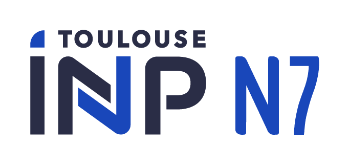
Étudiante en 2ème année à l'ENSEEIHT - Localisation Toulouse (31000)
Elevator Speech
Découvrez mes atouts professionnels et mes inspirations en quelques minutes :
Durée : ~3 minutes • Format : MP4
Compétences clés
- Qualité d'écoute
- Esprit d'équipe
- Autonomie
- Organisée
Langues
- 🇬🇧 Anglais : niveau B2
- 🇪🇸 Espagnol : niveau B1
Cours d'ingénierie
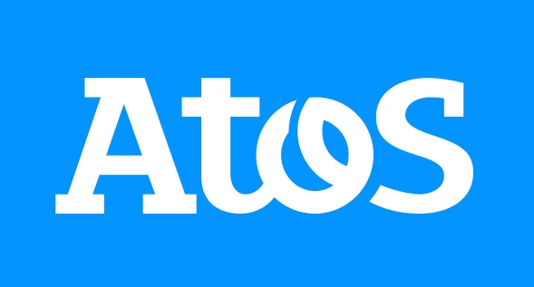
Stage de 3ème (2020)
Lors de cette première immersion dans le monde professionnel, j’ai découvert les différents métiers et l’environnement de travail au sein d’une entreprise technologique. J’ai pu observer plusieurs domaines d’activité tels que l’ingénierie, le contrôle qualité, les méthodes, la production et la logistique. J’ai également été initiée à divers outils professionnels, notamment le logiciel SAP, la conception assistée par ordinateur (Pro-Engineer).
Cette expérience m’a aidé à développer des qualités essentielles en milieu professionnel comme l’écoute, la rigueur, la curiosité, la capacité d’adaptation et le travail en équipe.
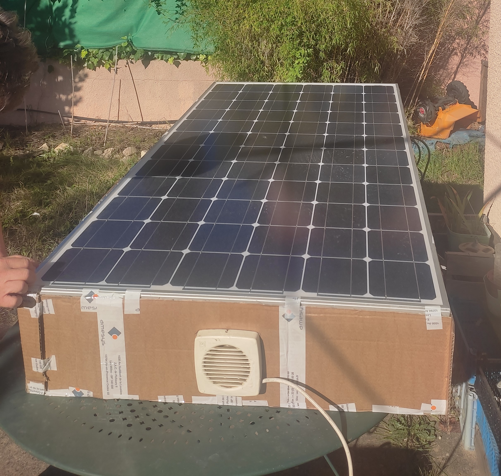

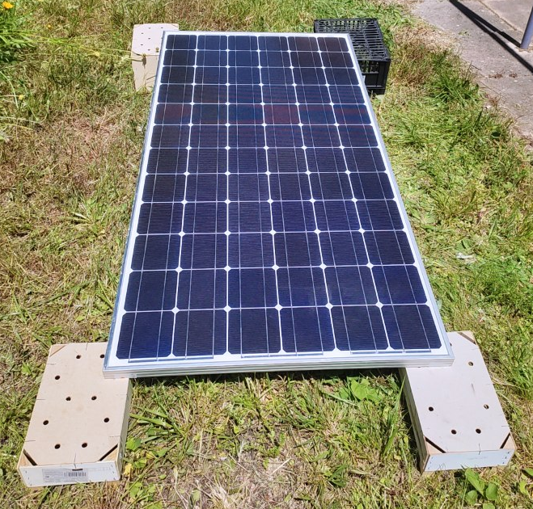
Projet scientifique – Transition énergétique (TIPE)
Dans le cadre de mon TIPE, projet axé sur les énergies renouvelables et la transition écologique, j’ai étudié l’influence néfaste de la température sur les performances des panneaux photovoltaïques et recherché des solutions pour améliorer leur rendement et réduire les pertes énergétiques.
Après une analyse théorique, j’ai effectué des mesures expérimentales afin de quantifier ces effets et de tester plusieurs méthodes de refroidissement, actives et passives. J’ai ensuite interprété, comparé et validé mes résultats expérimentaux par rapport aux modèles théoriques, ce qui m’a permis de retenir deux solutions passives efficaces, alliant performance énergétique, contraintes environnementales et faisabilité technique :
-
1ère solution : poser les panneaux sur les lacs
Avantages : simplicité, exploitation de la fraîcheur naturelle de l’eau.
Inconvénient : efficacité très limitée.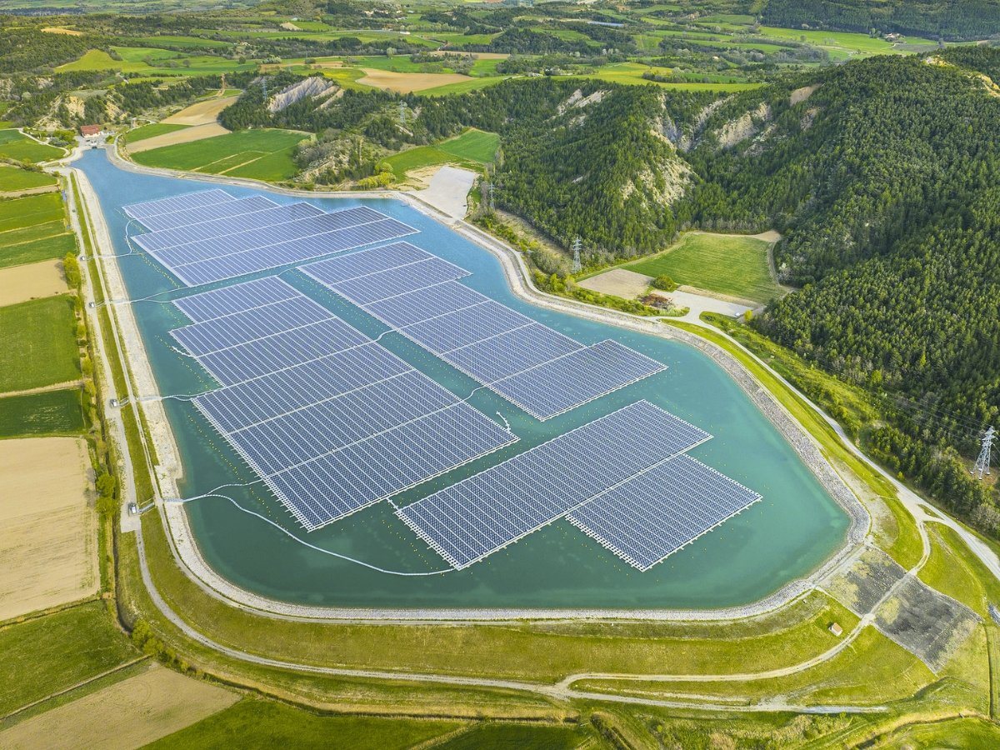
-
2ème solution : ailettes de refroidissement
Avantages : capacité à dissiper efficacement la chaleur.
Inconvénients : contrainte d’installation, système plus encombrant.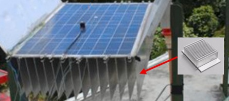
Mobilité
Expérience passée
Woofing en Irlande – Little Black Hill Farm (Killarney)
Partie à Killarney, en Irlande, j'ai vécu une immersion complète dans une ferme maraîchère, la Little Black Hill Farm. Vivre au quotidien avec une famille d'accueil et d'autres volontaires m'a obligée à parler anglais en permanence, à m'adapter à un nouveau rythme de vie et à une autre culture. Cette expérience m'a appris à être autonome, à sortir de ma zone de confort et à m'intégrer rapidement dans un groupe inconnu.
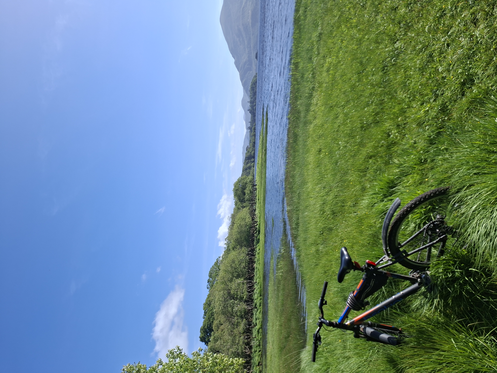
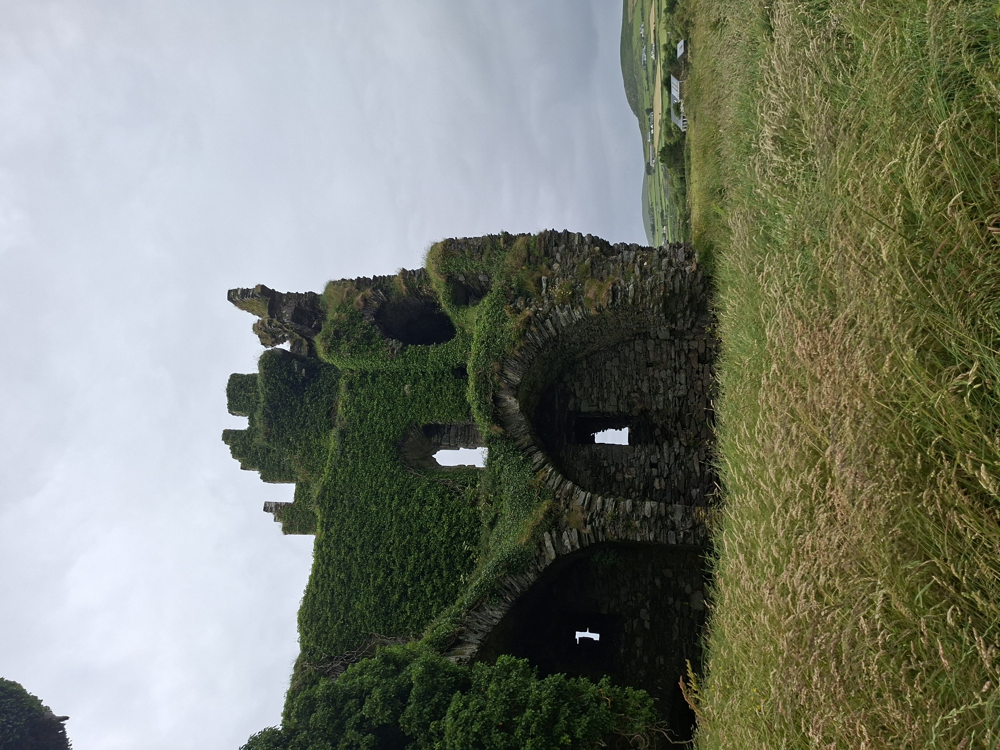
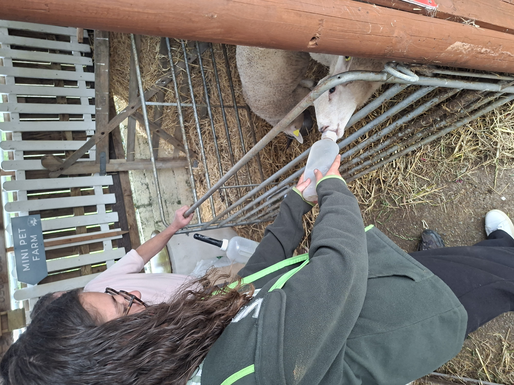
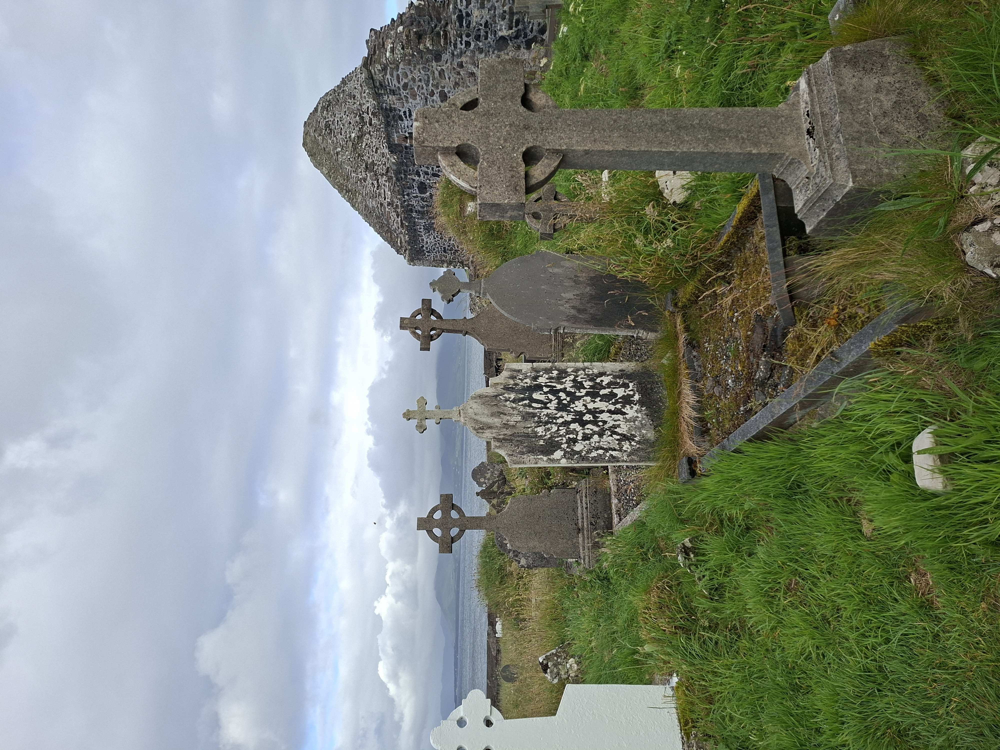
Projet futur

Stage au Vietnam – Université de Hô Chi Minh-Ville
Je souhaite effectuer un stage à l'université de Hô Chi Minh-Ville, au Vietnam, afin de découvrir un environnement de recherche et de travail très différent du mien, de renforcer mes compétences techniques et scientifiques, et de vivre une expérience interculturelle forte en Asie du Sud-Est.
Engagement civique et durable
Mes actions dans le bénévolat, l'événementiel, le service communautaire et les projets citoyens.

Volontariat sportif – Ligue des Nations de Volley
- Participation à un événement international (ramasseuse de balle).
- Esprit d’équipe, sens du service, responsabilité.
- Accueil du public et assistance logistique pendant la compétition.
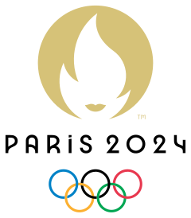

Volontaire – Jeux Olympiques de Paris 2024
- Accueil, orientation et accompagnement des spectateurs (français et étrangers).
- Mise en avant de qualités humaines : diplomatie, écoute, gestion du stress, adaptabilité.
- Contribution à un événement d’intérêt national et collectif.
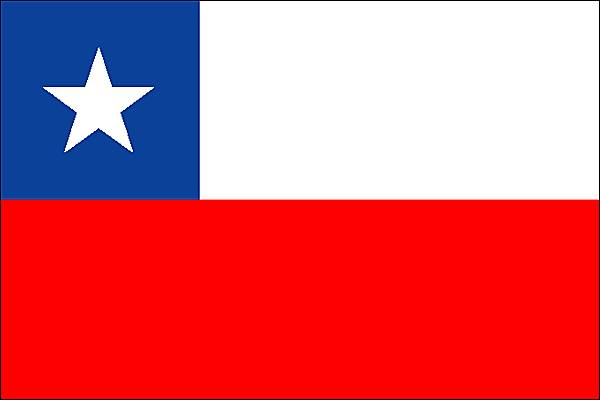
Projet solidaire – Voyage humanitaire au Chili (été 2026)
- Projet de voyage solidaire avec le club Human7 visant à aider, tutorer et sensibiliser des enfants dans des écoles ou des orphelinats au Chili.
- Objectifs : favoriser l’accès à l’éducation, encourager l’ouverture culturelle et renforcer les valeurs de solidarité internationale.
- Une expérience humaine et éducative centrée sur l’échange et l’entraide.
Retrouvez ci-dessous l'infographie complète du Projet Chili 2026, détaillant notre organisation, nos objectifs pédagogiques en partenariat avec l'Ambassade de France, ainsi que notre plan de financement solidaire. À côté, une photo de notre équipe : grâce à notre pitch de présentation du projet, nous avons remporté un certificat qui valorise le développement de notre communication, de notre créativité, de notre esprit critique et de notre travail d'équipe.
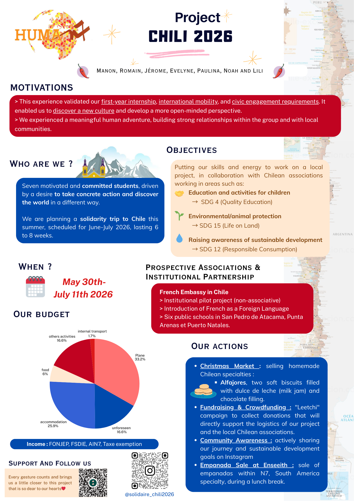
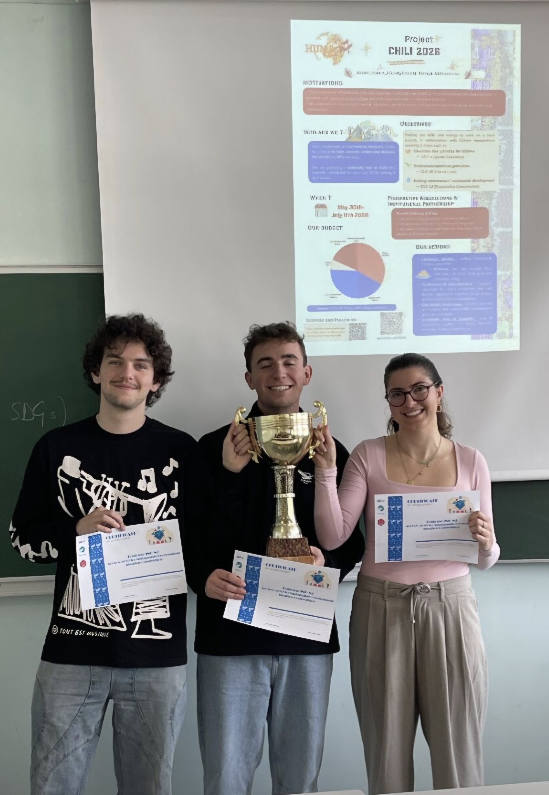
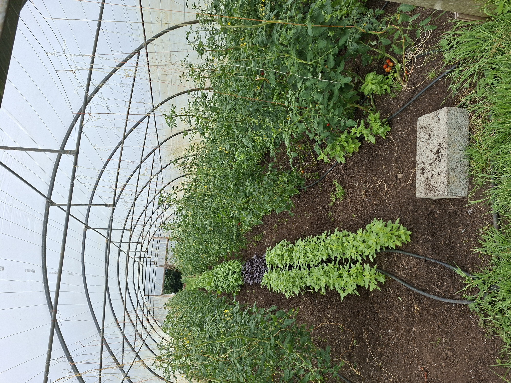
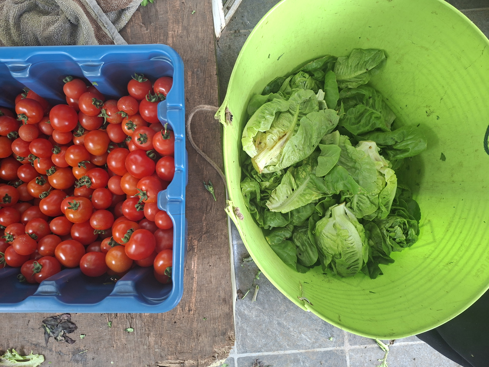
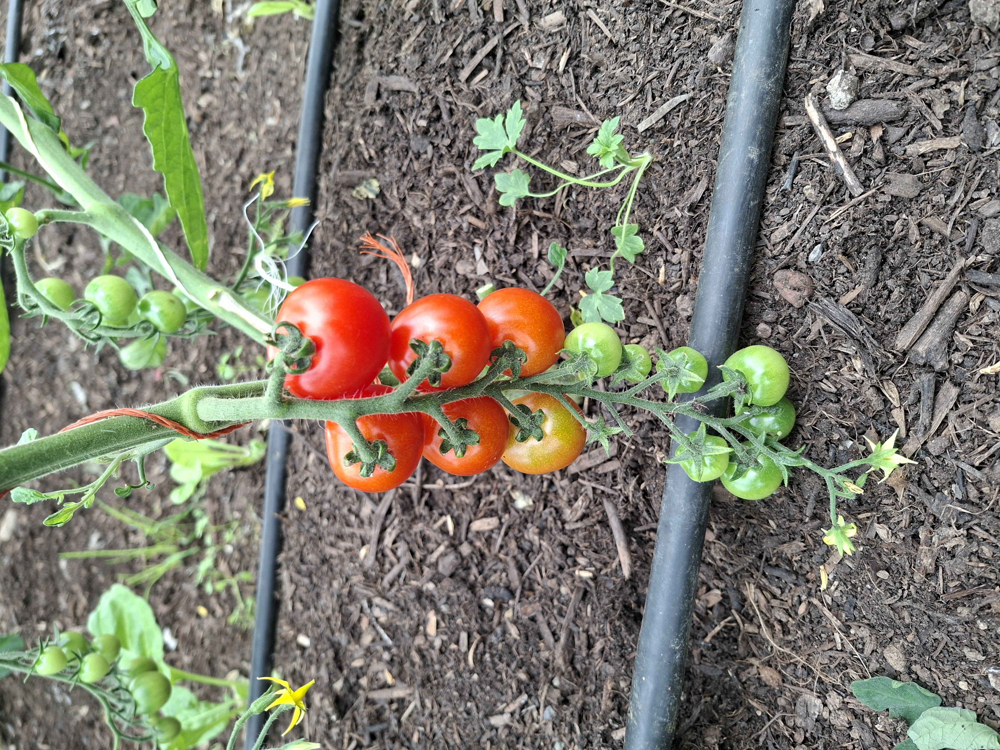
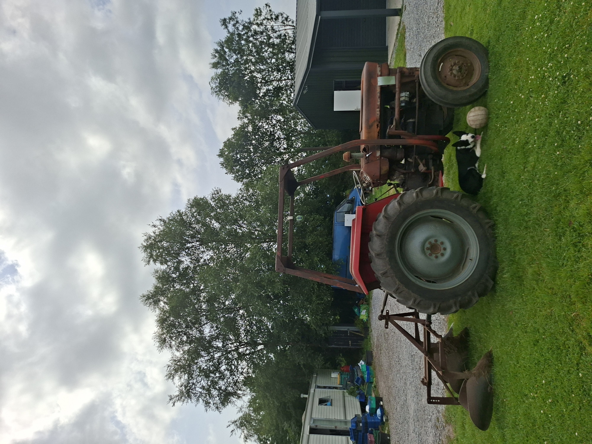
🌱 Bénévolat agricole – Woofing en Irlande
- Volontariat dans une ferme maraîchère (Little Black Hill Farm, Killarney), en échange du logement et des repas.
- Découverte concrète de l'agriculture durable : cultiver et récolter des légumes dans le respect de la terre.
- Une expérience qui rejoint mes convictions : agir à mon échelle pour un mode de vie plus responsable.
🌍 Atelier – La Fresque du Climat
- Atelier collaboratif suivi dès ma première année à l'ENSEEIHT, avec d'autres élèves-ingénieurs.
- Compréhension des causes et des conséquences du dérèglement climatique à travers un travail de groupe.
- Prise de conscience du rôle que nous aurons à jouer, en tant que futurs ingénieurs, face à ces enjeux.
⚖️ Pièce interactive – Le Procès de King Kong
- Spectacle participatif auquel j'ai pris part en première année d'école d'ingénieurs.
- Sensibilisation aux violences sexistes et sexuelles (VSS) et à leurs conséquences.
- Réflexion sur le rôle de chacun pour repérer, prévenir et réagir face à ces situations.
💡 Festival – « Futur Proche »
- Festival organisé par l'ENSEEIHT et plusieurs établissements toulousains : conférences, ateliers et présentations autour des innovations existantes et à venir.
- Si les enjeux écologiques étaient au cœur des échanges, l'événement m'a surtout fait réaliser les gestes concrets que l'on peut adopter à notre échelle.
- Conférence de La Grande Bavardeuse (influenceuse) sur les low-techs et sur la place de la technique dans notre société actuelle.
Sports & Activités
-
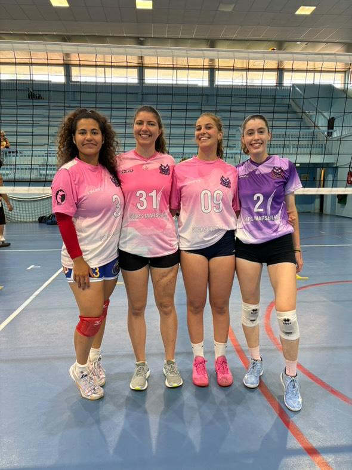
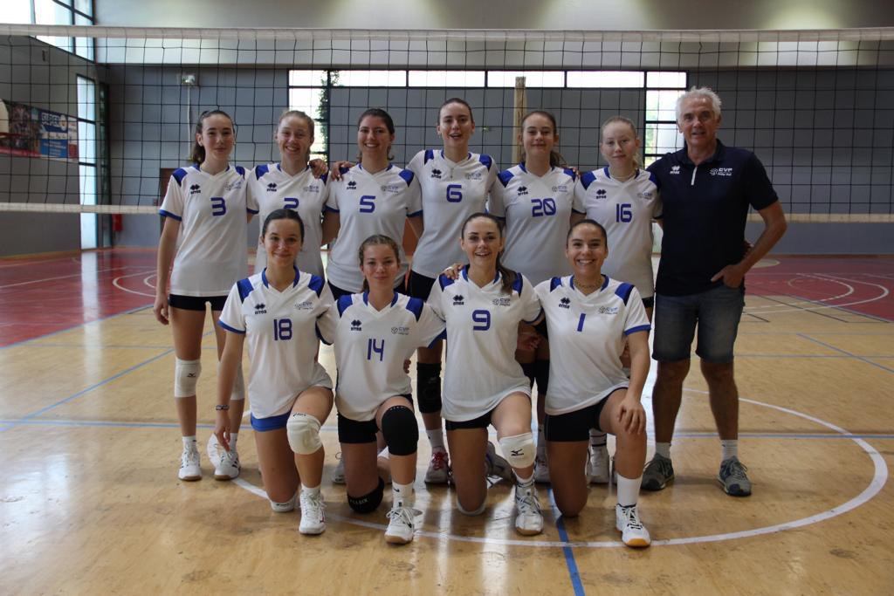
Volley-ballJ'ai joué en club pendant 12 ans :
- 9 ans dans le club de Venelles (PAVVB, club professionnel féminin)
- 3 ans dans le club de Velaux (CVF, National 3)
J’ai participé à de nombreuses compétitions nationales :
- Coupes de France jeune (de M13 à M18)
- Tournois internationaux (Hyères et Mougins, à plusieurs reprises)
Passionnée de sport, je me suis investie dans l’AS depuis le collège jusqu’au lycée, et fais aujourd’hui partie de l’équipe féminine 1 de l’AS INP, ainsi que de l’équipe mixte engagée pour la Coupe de France.
-
Piano
J'ai joué du piano pendant 5 ans ainsi qu'un peu de solvège. J'ai notamment participé à des représentations.
-
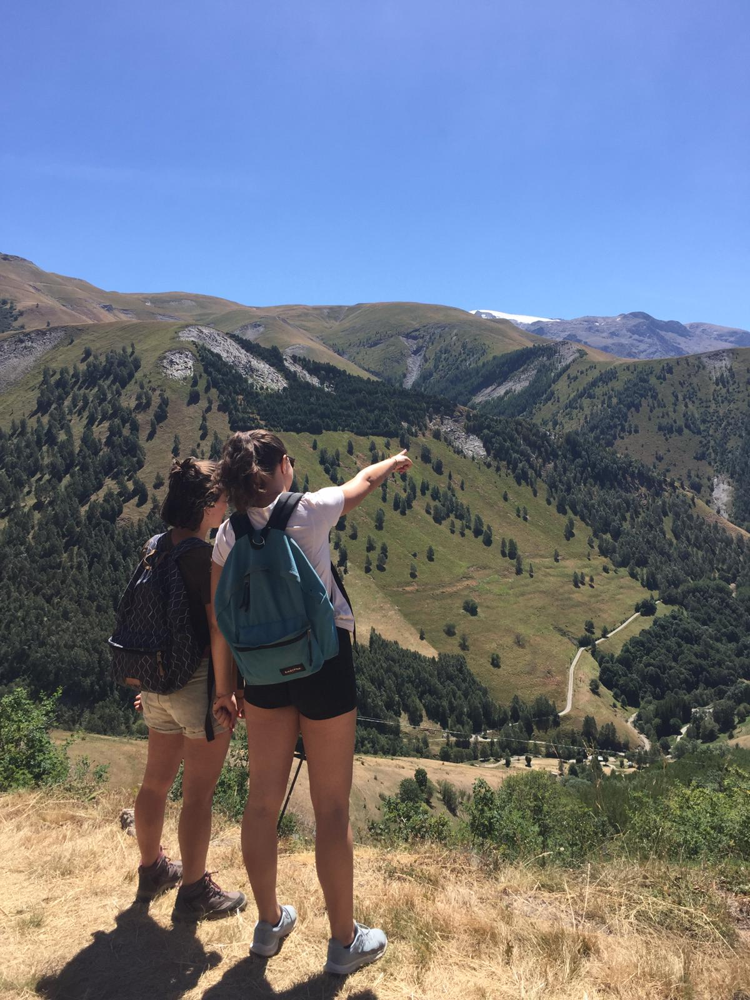
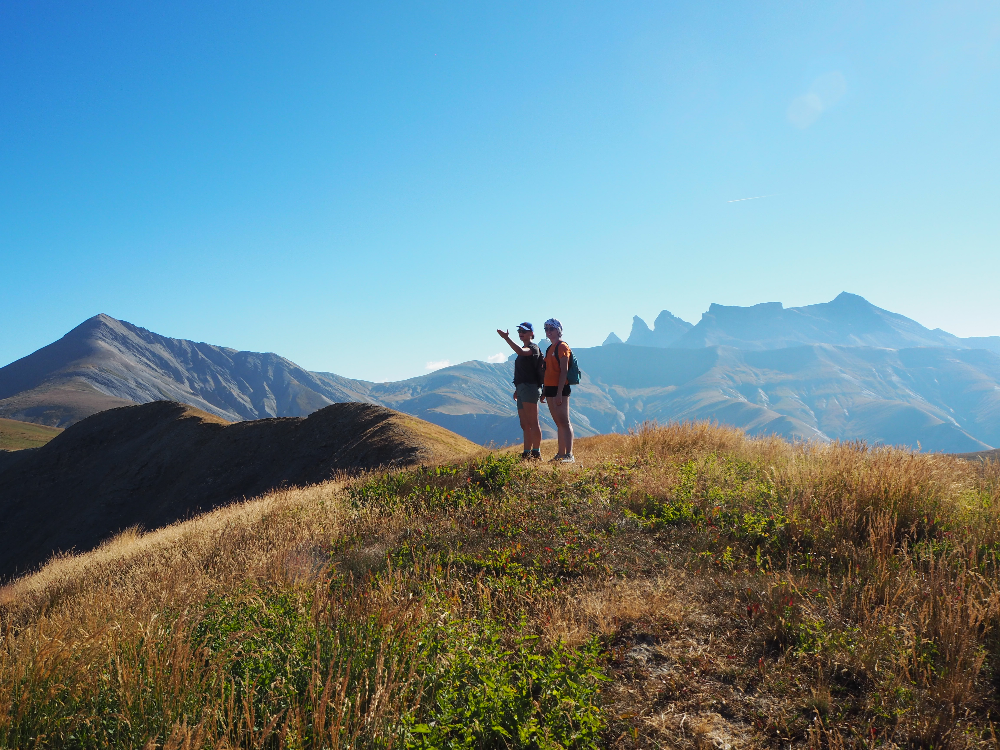
Randonnée- Je suis passionnée par la montagne et la découverte de nouveaux paysages, notamment les sentiers des Alpes.
- Mon projet est de faire le GR20 en Corse
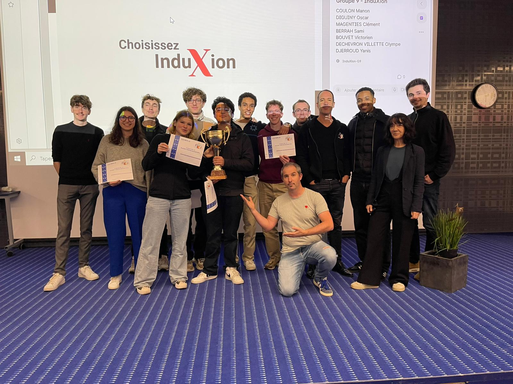
Journée d'entrepreneuriat – Projet « induXion »
- Journée dédiée à l'entrepreneuriat, avec pour objectif de créer un projet concret répondant à un problème du quotidien.
- Notre idée, induXion : une plaque à induction qui prolonge la plaque existante des étudiants, souvent trop petite pour cuisiner confortablement.
- Avec mon équipe, nous avons remporté le certificat du projet, qui valorise notre créativité, notre esprit d'équipe et notre capacité à présenter une idée de manière convaincante.
Contact
Vous pouvez me contacter par mail à l'adresse : manon.coulon@etu.inp-n7.fr .
Retrouvez-moi sur LinkedIn : linkedin.com/in/manon-coulon-472b63383
En effet, l'ingénierie ne concerne pas seulement la science et la technologie, mais aussi les personnes, le progrès et les objectifs. En apprenant auprès de professionnels inspirants et en travaillant sur des projets internationaux, j'espère contribuer à un avenir
plus propre, plus intelligent et plus connecté.